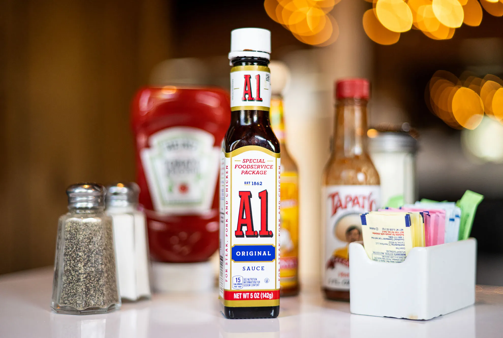
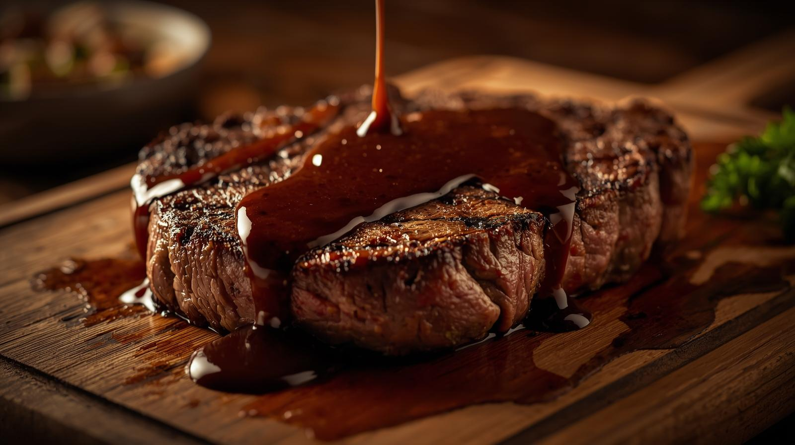
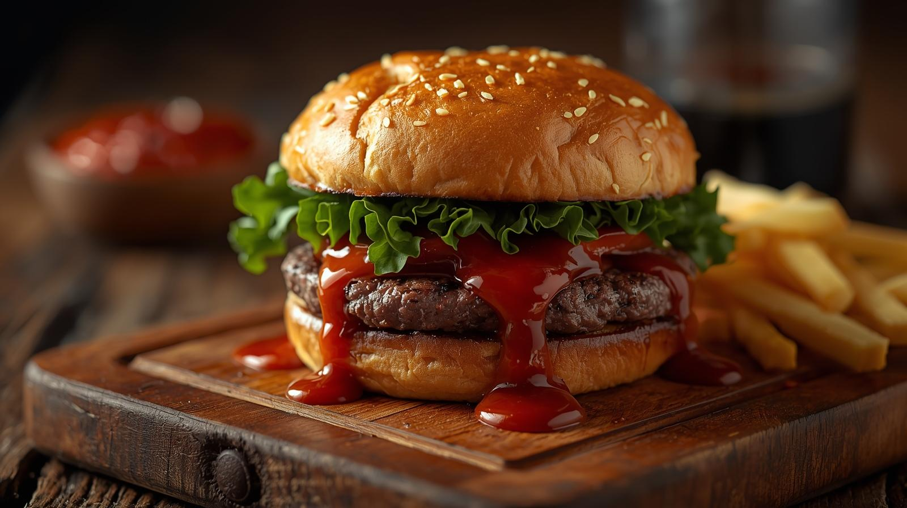
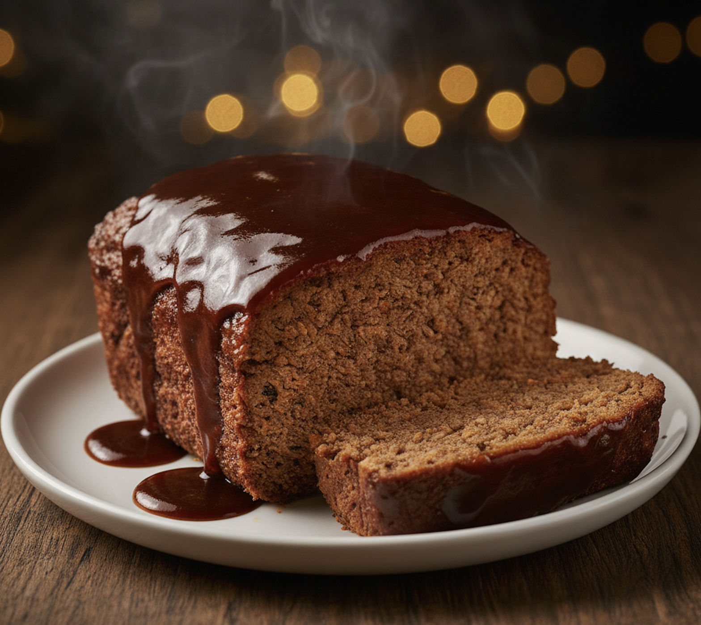
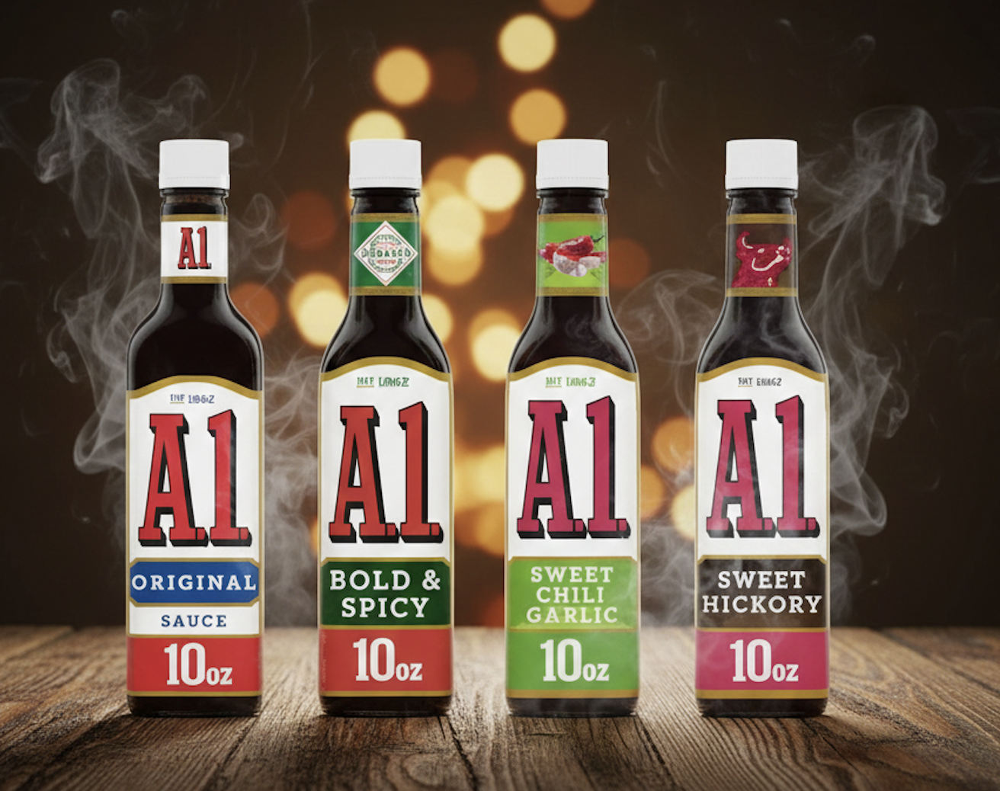
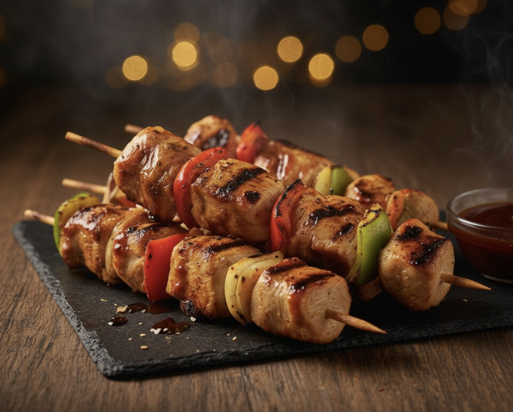

ABOUT A1 SAUCE
A1 Sauce has been the perfect companion to your favorite dishes for over 150 years.
Its bold and tangy flavor enhances every bite.

DELICIOUS RECIPES
Discover mouthwatering recipes that bring out the best in A1 Sauce.
| Recipe Item |
Prep Time |
A1 Amount |
Calories |
| Classic Steak |
15 mins |
2 tbsp |
450 |
| A1 Burger |
20 mins |
1 tbsp |
550 |
| Glazed Ribs |
45 mins |
1/2 cup |
700 |
| A1 Meatloaf |
60 mins |
1/4 cup |
400 |
| Grilled Chicken |
25 mins |
3 tbsp |
350 |


PRODUCT GALLERY
Check out our variety of bold flavors and classic pairings.


